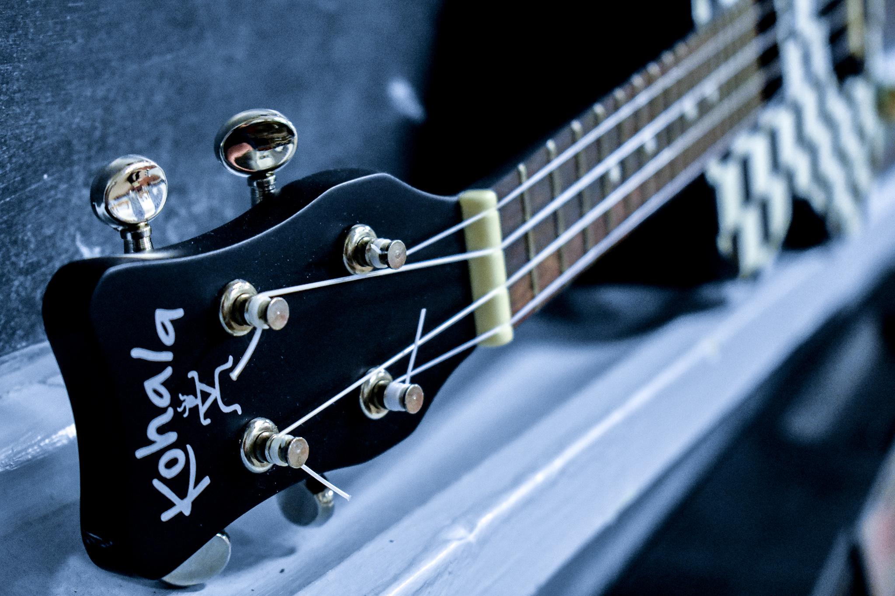
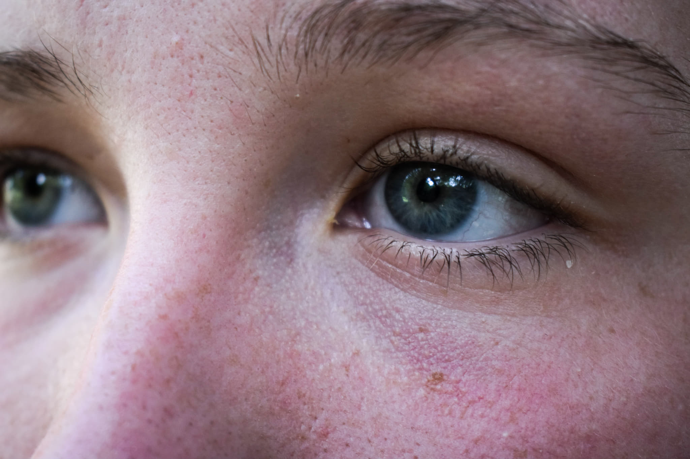

1 / 4

This is a close up image of a guitar I took for Federal Valley Resource Center from their beautiful music room.
2 / 4
This is a photo of my dog Ryder that I took and then changed to black and white to make it seem a bit sadder and more lonely.
3 / 4

This is a close up of my eyes that I created as part of a 30-day photo challenge I did with my friends.
4 / 4

This is a self portrait I created as part of a 30-day photo challenge I did with my friends.